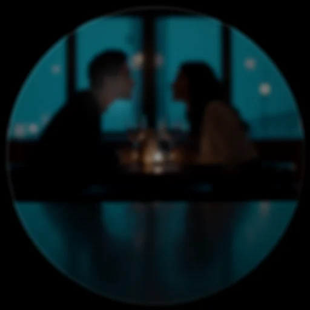

Truth and discernment
DreamLayer's flagship capability is a live read on what is being said to you: Veritas checks the content of claims, Truth Lens reads the delivery, and Discernment fuses the two — plus the speaker's history — into one graded stance. The three are deliberately separate engines answering different questions on different inputs, composed at the end. A fourth conversational copilot, answer-ahead, rides the same caption stream.
Everything in this chapter is engineered to underwhelm on purpose: strict claim filters, confidence floors, per-speaker cooldowns, and an explicit "unverified" verdict. A fact-checker that fires constantly, or overclaims, is worse than none.

Veritas — the live fact-checker
Off by default; enabled with set_factcheck(True) (the phone's "Live
fact-checker" toggle). While on, every other-speaker line landing in
ingest_caption runs two passes (orchestrator/veritas.py):
Pass 1 — self-contradiction (fully offline)
The line is compared against the same speaker's own earlier lines from the
conversation ledger, using Candor's contradicts predicate (at least two
shared content words with an opposing assertion). A clash produces the
strongest verdict in the system — self_contradiction, confidence 0.9 — with
the receipt quoted on the card: earlier: "we settled at two million". No
network, no model, no cloud: this pass works on a plane.
Pass 2 — the world check
Only a checkable claim is ever escalated:
- Not a question (trailing "?" disqualifies).
- Not hedged — a leading "I think / maybe / probably / it seems / in my opinion..." disqualifies.
- And it must either contain a number-like fact (years, percentages, quantities, money, distances) or a factual predicate (an is/are/was assertion touching a fact word: capital, invented, founded, discovered, largest, president, boiling point...).
The claim goes to _verify_claim, which is real and tiered: it wraps the
claim in a tightly-shaped verification prompt
(ai_brain/verify.py: VERIFY_PROMPT demands exactly one line —
VERDICT: SUPPORTED|DISPUTED|UNVERIFIED — reason) and routes it through
brain.ask — your local model first, the cloud tier only if you have
opted in, and never while incognito. The reply is parsed into
{verdict, basis, confidence}: unverified maps to confidence 0.3; supported
and disputed map to 0.8, knocked down to 0.55 if the model hedged. If no tier
can answer (offline, no model), the seam returns None — and the offline
self-contradiction pass still stands alone.
Fast by construction
The world check never blocks the conversation. The offline self-contradiction
pass runs synchronously and lands instantly; the world check runs off the
caption path through ai_brain/world_check.py: WorldChecker:
- Cache — a short-TTL, bounded cache keyed on the normalised claim. The same assertion, or a repeat of a common one, is answered from memory with no second round-trip.
- Deadline — each ask has a hard
timeout_s(2.5 s). A tier that answers too late is cached but not surfaced — a fact-check that arrives after the moment has passed is noise. - Off-path — a single background worker runs the ask (
check_async), so the ingest thread returns immediately; the card is delivered through a callback when the verdict lands, re-checking the veil/Focus gate at delivery time.orchestrator._fact_checktakes the instant offline pass withworld=False, then schedules the world check via the WorldChecker.
When it actually speaks
Sparingly, by construction:
- One verdict per speaker per 45 seconds (per-speaker cooldown).
- Above the floor only: a
disputedneeds confidence >= 0.55; asupportedneeds >= 0.85 to bother congratulating anyone. - Held during Focus; silenced by the Veil.
The card
Verdict tone is resolved on the device renderer itself, so a wire-delivered card can never lose its color: green VERIFIED (chime earcon), amber CHECK THIS (urgent hark earcon, double haptic, flash), red THEY SAID DIFFERENT BEFORE (hark, double haptic, flash), ghost UNVERIFIED (hark). Dismisses after 7 seconds.
Truth Lens — the delivery read
Off by default; enabled with set_truthlens(True). Where Veritas asks is
the claim true, Truth Lens asks how is it being delivered — a nine-stage
multimodal pipeline (truth_lens/): face embedding, action-unit detection,
prosody, linguistic analysis, baseline lookup, fusion, rendering, baseline
update, and a disabled fact-check stub (Veritas owns content).
Three channels, honestly labeled:
| Channel | Weight | Status |
|---|---|---|
| Micro-expression (AU) | 0.35 | Seam — fed by observe_face(frame) |
| Voice stress (prosody) | 0.35 | Seam — fed by observe_voice(mic_fft, amplitude) |
| Linguistic | 0.30 | Computed live from each caption: hedging (0.30), first-person distancing (0.25), complexity (0.25), negation (0.20) |
Calibration is the point
Every read is scored as a z-score against that person's own baseline
(set_contact), built with an online Welford update. A baseline needs 10
samples to calibrate; until then the person is treated as a stranger, and a
stranger's micro-expressions stay noise: stranger fusion only alerts if all
channels exceed 0.75, and its confidence is fixed at 0.2. The output is a
CredibilityVector — deception probability, confidence, per-channel
z-scores, dominant channel, stranger flag — with labels stepping CREDIBLE
(< 0.40), UNCERTAIN (< 0.65), ELEVATED (< 0.85), HIGH ALERT (>= 0.85), and
CALIBRATING below 0.3 confidence.
On glass it renders as the testimony thread — nine stages around the ring, truthful stages as continuous arc, deceptive ones torn:
With Truth Lens on, the orchestrator runs a delivery read for the current
speaker on every other-speaker line (_read_delivery), without the HUD
display gate — because Discernment wants the reassuring reads too — and feeds
the result in via note_credibility(speaker, vector).
Discernment — three lenses, one read
orchestrator/discernment.py: discern(fact, credibility=None, history=0)
composes content, delivery, and history into one stance. The scoring is
plain and inspectable:
- Content concern: self-contradiction 0.85, disputed 0.80, unverified 0.20, supported 0.
- Delivery counts only once the baseline is calibrated (vector confidence
= 0.3): deceptive at deception probability >= 0.65, credible below 0.40. Delivery contributes at half weight.
- History: each prior flag on this speaker adds 0.15, capped at three.
- Synergy: a false claim delivered deceptively earns an extra 0.2 — content and delivery agreeing is the strongest signal there is.
The weight maps to a stance: flag (>= 0.8), caution (>= 0.5), note (>= 0.25), trust — and a human headline that says what the fusion actually thinks:
"Doesn't add up — and it didn't sound like it, either." "The claim is off, but they seem to mean it." — a false claim delivered sincerely reads as an honest mistake, not a lie. "Checks out — but the delivery was uneasy." "They contradicted their earlier words. Not the first time."
The stance and headline land on the FactCheckCard, and the footer carries the tag ("Marcus - elevated - seen before").
Answer-ahead — the conversational copilot
Off by default; enabled with set_copilot(True) (the phone's "Answer-ahead"
toggle). When someone else asks a question in the caption stream,
orchestrator/answer_ahead.py decides whether it is a real, answerable
question — a wh-question, or one aimed at you — and never a rhetorical
"...right?" or "you know?". If so, it pre-fetches the answer from your own
knowledge through the same tiered router (cloud only when opted in) and
flashes an AnswerAheadCard you can read and say yourself.
Its manners are the feature: no wake word, no earcon — silent by design (a tick haptic only), a cooldown between fires, a confidence floor beneath which nothing surfaces, held during Focus, gated by the Veil, and a clean miss (offline or low confidence) surfaces nothing at all.
What is implemented versus seam, precisely
| Piece | Status |
|---|---|
| Claim detection, self-contradiction pass, cooldowns, thresholds, cards | Implemented and tested |
World check plumbing (verify_claim, prompt, parsing, tier routing, incognito/cloud gates) |
Implemented and tested |
| A live verification model behind it | Seam — Ollama on the Brain and/or the opt-in cloud tier answer it; with neither, world checks return nothing and only pass 1 runs |
| Truth Lens linguistic channel, baselines, fusion, gauge | Implemented and tested |
| Truth Lens face and voice channels | Seam — observe_face / observe_voice accept device frames; tests feed synthetic ones |
| Discernment fusion and stances | Implemented and tested |
| Answer-ahead detection, pacing, card | Implemented and tested; the answer itself rides the brain seam above |